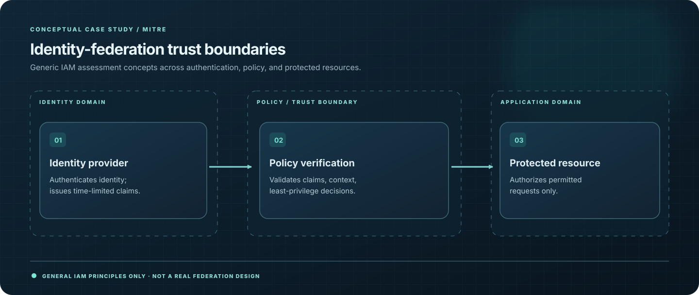

05 / PROJECT CASE STUDY · 2026
Identity Security & Federation Research
Evaluating identity federation choices and security tradeoffs across complex environments.

01 / CONTEXT
The challenge
Identity federation spans multiple platforms and trust boundaries. Choices about authentication, authorization, and integration can introduce new security risks.
02 / EXECUTION
My approach
- Researched Keycloak identity and access management and how federation choices affect trust boundaries.
- Analyzed risk considerations involving Entra ID, Azure, AWS, and on-premises identity components.
- Documented security tradeoffs to support technical discussions about federation architecture.
03 / EVIDENCE
Outcomes & contribution
- Conducted comparative identity-security research spanning cloud and on-premises environments.
- Identified trust-boundary and federation risks for consideration during security assessment.
- Delivered research findings; this is not presented as a deployed identity integration.
04 / TAKEAWAY
What I learned
Secure identity architecture requires careful attention to trust boundaries and lifecycle management, not merely successful authentication.
Sharing & confidentiality
Public-safe summary. No classified or sensitive environments, architecture specifics, configuration artifacts, or findings are disclosed.